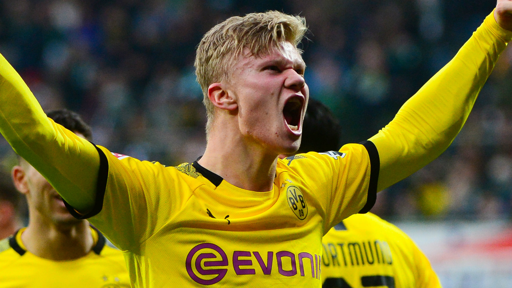
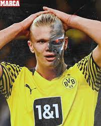

Bienvenido a nuestro blog sobre el androide haland
Erling Haaland no se detiene. Suma y sigue. Cada partido que pasa, cada encuentro que juega, el delantero noruego del Manchester City lo utiliza como una oportunidad para engordar sus increíbles estadísticas en el fútbol